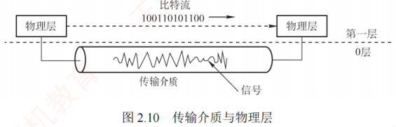

2.4 本章小结及疑难点
对应王道教材 2.4 节（教材 P48–P49）· 本节属于 408 考纲范围
本章要点小结
- 基本概念：数据是信息的载体，信号是数据的电气或电磁表现；码元是表示 k 进制符号的固定时长波形，1 码元可携带若干比特；信源/信道/信宿构成单向通信系统模型；基带传输 vs 宽带传输；串行 vs 并行；单向/半双工/全双工。
- 速率：波特率（Baud，码元/秒，与进制无关）与比特率（b/s）；一个码元携带 \(n\) 比特时，\(M\) Baud 对应 \(M\times n\) b/s。
- 极限容量：奈奎斯特定理 \(2W\log_2 V\)（理想低通信道，限制码元速率）；香农定理 \(W\log_2(1+S/N)\)(有噪声信道，限制信息速率)；分贝记法 \(10\log_{10}(S/N)\)，代入香农公式时须用无单位信噪比。
- 编码与调制：数字数据→数字信号（RZ、NRZ、NRZI、曼彻斯特、差分曼彻斯特）；模拟数据→数字信号（PCM：采样、量化、编码，采样频率不低于信号最高频率两倍）；数字数据→模拟信号（ASK、FSK、PSK、DPSK、QAM，\(R=B\log_2(m\times n)\)）。
- 传输介质：双绞线（UTP/STP，绞合减少干扰）、同轴电缆（50Ω 基带 / 75Ω 宽带）、光纤（多模 vs 单模，全反射原理）；无线：无线电波（全向）、微波/红外线/激光（视距、指向性）、卫星（覆盖广、时延大）。
- 物理层接口特性：机械、电气、功能、过程（规程）四特性。
- 物理层设备：中继器（两端口、信号再生、5-4-3 规则）；集线器（多端口中继器、共享式、广播至所有端口、物理星形逻辑总线、半双工、不能分割冲突域）。
疑难点逐条辨析
疑难点 1：传输介质属于物理层吗？它与物理层有何区别？
传输介质不属于物理层。尽管与物理层紧密相关，但从网络体系结构看，它位于物理层之下，常被非正式称为"第 0 层"。区别在于：传输介质只承载电信号或光信号，无法区分信号所代表的比特值——即无法判断某一电平对应的是 1 还是 0；物理层通过定义电气、机械、功能和过程特性（如电压、时序、接口规范等），将原始信号解释为有意义的比特流，供上层使用。图 2.10 直观展示了这一关系：传输介质是信号的"通道"，物理层是赋予其语义的"规则制定者"。

疑难点 2：什么是基带传输、频带传输和宽带传输？它们有什么区别？
基带传输：直接发送原始的数字信号（如高、低电平），不经过调制。它占用整个信道带宽，通常用于短距离通信，比如局域网或计算机内部连接。常用的编码方法包括不归零编码和曼彻斯特编码。不归零编码的做法是用高电平表示 1、低电平表示 0。例如，要传输 "1010"，若高电平代表 1、低电平代表 0，则线路上依次传送（高、低、高、低）这一电平序列。
频带传输：当需要远距离或无线传输时，必须把数字信号"搭载"到一个高频载波上，这个过程叫调制，转换后的信号更适合在模拟信道（如电话线）上传输，称为频带传输。它不仅让数字信号能在传统电话系统中传输，还支持多路复用，提高信道利用率。例如，仍然传输 "1010"，经过调制后，一个码元可能代表 4 位二进制数据；若码元 A 对应 "1010"，则在模拟信道上只需发送码元 A，就相当于完成了该数据的传输。电话线上网、Wi-Fi 等都属于频带传输。
宽带传输：在传统通信语境中，宽带传输指利用频分复用等技术，将一条物理线路划分为多个频带信道，每个信道可独立进行频带传输，互不干扰。这样，多个信号可以并行传送，显著提升链路容量。例如，有线电视网络能一边上网、一边看电视，正是利用了宽带传输技术。
疑难点 3：奈氏准则和香农定理的主要区别是什么？它们对数据通信的意义是什么？
奈氏准则与香农定理从不同角度揭示了信道传输能力的极限。奈氏准则仅考虑信道带宽限制，指出在给定带宽下，码元传输速率存在上限（与噪声无关），超过该上限将因码间串扰而无法正确识别信号；但它不限制每个码元所携带的比特数，因此可通过高阶调制（如一个码元表示多位）提升信息传输速率。香农定理则适用于有噪声的实际信道，指出对于确定的带宽和信噪比，信息传输速率存在一个不可逾越的理论上限，无论采用何种技术都无法突破。这意味着，要提高通信速率，只能通过增加带宽或改善信噪比，但二者在现实中均有物理限制。它们共同构成了数据通信系统设计的理论基础。
疑难点 4：信噪比明明是 S/N，为什么还要用 10log₁₀(S/N) 表示？
信噪比可以用两种方式表示：
- 线性比值（无单位）：如信号功率为 100，噪声功率为 1，则信噪比 \(S/N=100\)。
- 分贝形式（单位 dB）：此时信噪比为 \(10\log_{10}(S/N)=10\log_{10}100=20\text{dB}\)。
两者在数学上等价，但分贝形式更实用。因为在通信中，信号与噪声的功率差异往往极大，例如信号可能是噪声的 10 亿倍。若用线性值表示，则 1 后面有 9 个 0，不仅冗长，还容易数错；而用分贝表示仅为 90dB，简洁且不易出错。因此，分贝能高效、清晰地表达极大或极小的比值。